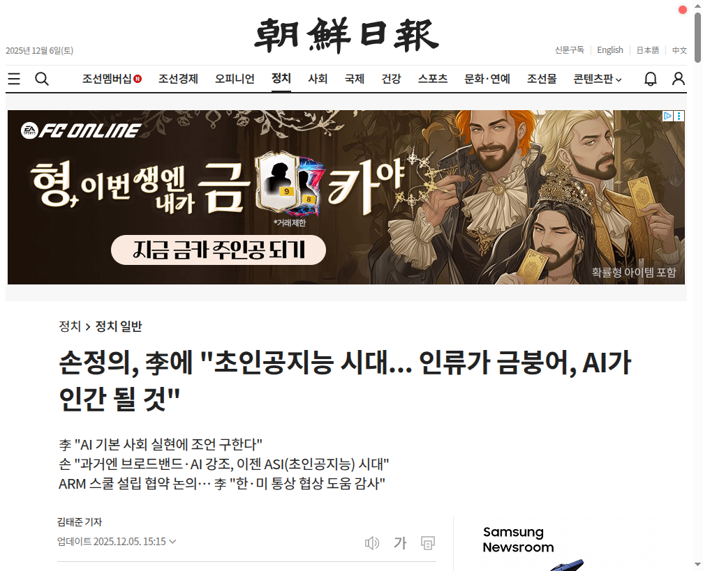

1
손정의 "초인공지능 시대... 인류가 금붕어, AI가 인간 될 것"
조선일보
기사 요약
소프트뱅크 그룹의 손정의 회장이 이재명 대통령을 예방하고, 초인공지능(ASI: Artificial Super Intelligence) 시대의 도래를 예고했다. 손 회장은 AI 시대에서 인류와 AI의 지능 격차를 "금붕어와 인간"에 비유하며, AI가 인간 수준의 지능을 넘어설 것이라고 전망했다.
핵심 포인트
- 손정의 회장, 이재명 대통령 예방
- ASI(초인공지능) 시대 도래 예측
- 인간과 AI 지능 격차: "금붕어 vs 인간" 비유
- AI가 인간 수준 지능 초월 전망